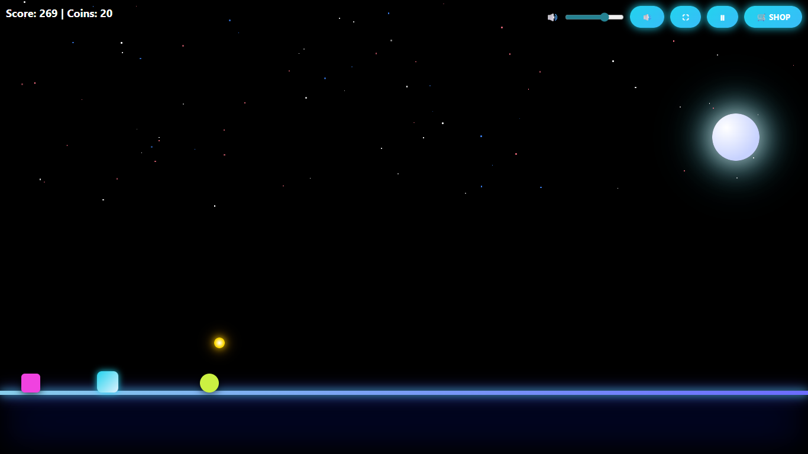

Why HTML5 Games Are the Future of Online Gaming
HTML5 games have rapidly transformed the online gaming industry by making games more accessible,
faster, and easier to play for users around the world. Unlike traditional PC or console games,
HTML5 games do not require downloads, installations, or special software. They run directly inside
modern web browsers, allowing players to start playing instantly with just one click.

Play Night Sprint now!
One of the biggest advantages of HTML5 games is cross-platform compatibility.
A single HTML5 game can run smoothly on desktop computers, laptops, tablets,
and smartphones without requiring different versions for each device.
This allows developers to reach a wider audience with minimal technical complexity.
Fast loading speed is another major reason why HTML5 games are becoming more popular.
Traditional games often require large downloads that consume storage space and time.
In contrast, HTML5 games are lightweight and optimized for performance,
making them ideal for users with limited internet speed or storage capacity.
HTML5 supports modern web technologies such as CSS animations, JavaScript engines,
and responsive layouts. These technologies allow developers to create visually appealing
games with smooth animations and interactive gameplay.
Endless runner games, arcade games, and puzzle games benefit greatly from this approach.
Mobile gaming has played a crucial role in the rise of HTML5 games.
Since most users access the internet through mobile devices,
HTML5 games are designed with touch controls such as tapping and swiping.
This makes gameplay intuitive and user-friendly on smartphones and tablets.
From a safety and accessibility perspective, HTML5 games are suitable for all age groups.
Most browser-based games do not involve gambling, betting, or real-money transactions.
Players are not required to create accounts or share personal data,
which makes these games privacy-friendly and safe for younger audiences.
Another important advantage of HTML5 games is easy maintenance and updates.
Developers can update games directly on the server,
and players automatically get the latest version when they refresh the page.
This ensures better performance, fewer bugs, and continuous improvements.
HTML5 games are also widely used for casual and stress-free entertainment.
Many schools, colleges, and workplaces restrict software installation,
but browser games are usually accessible.
Short gaming sessions help players relax while improving focus and reflexes.
Monetization through advertisements is another reason why HTML5 games are growing.
Developers can integrate ads without interrupting gameplay,
making it possible to offer games for free while still generating revenue.
This model benefits both players and developers.
In conclusion, HTML5 games represent the future of online gaming
because they are fast, accessible, cross-platform, and user-friendly.
Games like Night Sprint show how browser-based gaming can deliver engaging
experiences without downloads, making HTML5 an ideal choice for modern gaming.
Top Tips to Achieve High Scores in Night Sprint
Night Sprint is a fast-paced HTML5 endless runner game that tests your reflexes and timing.
While the game looks simple, achieving a high score requires strategy, patience, and practice.
In this article, we will share proven tips to help you survive longer and collect more coins.
1. Learn the obstacle patterns: The key to scoring high in Night Sprint is anticipating obstacles.
Obstacles appear in predictable patterns, and observing them carefully allows you to time jumps and slides perfectly.
Avoid random movements, as mistimed jumps can end the run early.
2. Timing is everything: Precision is more important than speed.
Tap the screen or press the jump key at the exact moment before an obstacle.
Practicing your timing will improve reaction speed and reduce mistakes over multiple runs.
3. Collect coins strategically: Coins are not just for points—they unlock new skins and upgrades.
Prioritize paths with more coins, but don’t take unnecessary risks just for extra coins.
Survival is more important than collecting every coin.
Play Night Sprint now!
4. Use upgrades wisely: Night Sprint offers a shop where you can spend coins on upgrades.
Focus on upgrades that enhance survivability, such as longer jumps, shields, or magnet power-ups.
Upgrades will make high-score runs easier as the game speed increases.
5. Stay calm under pressure: As you progress, the game speed increases, and obstacles become more frequent.
Panic can lead to mistakes. Stay relaxed, watch the patterns, and respond carefully to each obstacle.
6. Practice regularly: Like any skill-based game, practice is essential.
The more you play, the more familiar you become with obstacle sequences, jump timing, and coin placements.
Set small goals for each session and gradually aim for higher scores.
7. Optimize your device settings: Make sure your device is responsive and running smoothly.
Avoid playing in low-battery mode or while apps are running in the background.
Night Sprint’s performance can be affected by device lag, so a smooth experience is essential for high scores.
By following these tips, players can increase their survival time, improve reaction speed, and maximize coin collection.
Remember, Night Sprint is designed to be challenging yet fun, so focus on improving gradually and enjoy the neon-lit gameplay.
Conclusion: Achieving high scores in Night Sprint requires observation, timing, and strategy.
Play Night Sprint now!
Use the tips above, practice consistently, and invest in upgrades to make your runs more efficient.
With patience and focus, you can become a Night Sprint pro and enjoy endless hours of gameplay.
Why Night Sprint Is a Safe and Fun HTML5 Game for All Ages
Online gaming has become a popular source of entertainment for people of all age groups.
However, not all games are suitable for everyone due to violence, gambling, or inappropriate content.
Night Sprint stands out as a safe and enjoyable HTML5 game that focuses purely on skill,
reflexes, and casual fun without exposing players to harmful elements.
One of the biggest reasons Night Sprint is safe for all ages is its simple and clean gameplay.
The game does not include violence, aggressive themes, or disturbing visuals.
Players control a runner who avoids obstacles and collects coins,
making the experience exciting without being harmful or stressful.
Night Sprint is built using HTML5 technology, which allows it to run directly in the browser.
There is no need to download apps, create accounts, or share personal information.
This reduces privacy risks and makes the game suitable for younger players as well as adults
who prefer quick and secure browser-based entertainment.
Another important aspect of safety is the absence of gambling or real-money mechanics.
Night Sprint does not involve betting, loot boxes, or pay-to-win systems.
Players progress by improving their skills rather than spending money,
which makes the game fair and stress-free.
The controls in Night Sprint are easy to understand.
Simple tap or key-based actions make it accessible even for beginners.
This ease of control ensures that players can focus on timing and concentration
rather than complex mechanics, making the game enjoyable for casual gamers.
From an educational perspective, Night Sprint helps improve focus and reaction time.
Players must pay attention to obstacles and make quick decisions.
These small challenges train the brain to react faster and stay alert,
which can be beneficial for both children and adults.
Parents often look for games that are safe and non-addictive.
Night Sprint offers short gameplay sessions that can be enjoyed in moderation.
Since there are no forced rewards or aggressive monetization tactics,
players can enjoy the game responsibly.
The visual design of Night Sprint also contributes to its positive experience.
Neon-style graphics are bright and engaging without being overwhelming.
The smooth animations and dark background reduce visual clutter,
allowing players to stay focused on gameplay.
Another advantage of HTML5 games like Night Sprint is automatic updates.
Any improvements or fixes are applied instantly on the website.
Players always access the latest version without downloading updates,
ensuring a smooth and secure experience.
In conclusion, Night Sprint is a safe, skill-based HTML5 game designed for players of all ages.
With no violence, gambling, or privacy risks, it provides clean entertainment
that focuses on reflexes, concentration, and fun.
This makes Night Sprint an ideal choice for anyone looking for a safe and enjoyable browser game.